mAAch Ecute Kanda Manseibashi
마치 에큐트 칸다 만세이바시
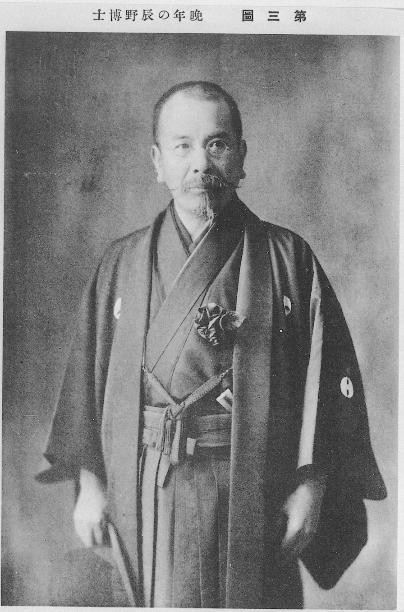
Tatsuno Kingo 다쓰노 긴고
辰野金吾 · 1854–1919
原設計 · 1912
JR East Design JR 이스트 디자인
JR東日本設計
リノベーション主管 · 2013
MIKAN 미캉
MIKAN
リノベーション設計 · 2013
그 역사를 간단히 살펴볼 수 있는 곳이 근처에 있는데요. 아키하바라에서 칸다강을 지나면 바로 보이는 'mAAch Ecute 칸다 만세이바시' 예전 이름으로는 'JR 만세이바시역'이 되겠습니다. 오늘에야 지하철이나 기차는 저 같은 뚜벅이들에게 있어서 없어서는 안 될 이동 수단인데요. 역세권이라는 말이 괜히 만들어진 게 아니잖아요? 하지만 아키하바라역이 지어지던 1890년대만 해도 열차의 대부분은 석탄을 태워 이동하는 증기 기관차였습니다. 매연이 장난 아니었겠죠. 특히 화물 열차는 여객 열차에 비해 더더욱 많은 연기를 내뿜었다고 하는데요. 그렇기 때문에 화물이 정차하는 역은 도심으로부터 조금은 떨어진 곳에 지어지는 것이 일반적이었다고 합니다. 아키하바라 또한 이때까지만 해도 지금과 달리 그저 화물 터미널에 지나지 않았습니다. 이는 당시 도심이던 마루노우치와 우에노로 들어가는 여객 수송을 더욱 쾌적하게 하기 위함이었죠.
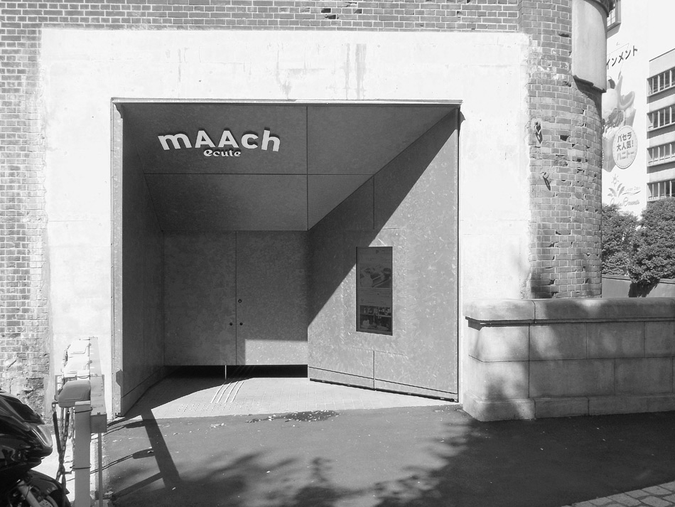
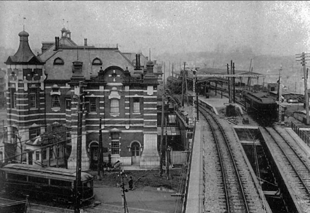
그리고 이때 이 동네의 여객을 담당하던 곳이 바로 이곳 만세이바시역이었습니다. 지금도 운행되고 있는 JR 중앙 본선의 기점이었으며 기록된 것으로는 도쿄역에 버금가는 위용을 자랑했다고 하는데요. 도쿄역과 마찬가지로 건축가 다쓰노 긴고가 설계를 맡았기 때문이라고 합니다. 그러나 이후 관동대지진으로 역사가 전소됨과 동시에 아키하바라역이 여객 철도 운행을 개시하면서 만세이바시역은 조금씩 쇠퇴하게 되었다고 합니다. 그리고는 한동안 철도 박물관으로 사용되었다고 하며 역사가 있던 자리는 현재는 고층 빌딩으로 완전히 재건축된 모습인데요. 그런 과거의 흔적을 암시하기라도 하듯 재건축된 건물의 1층에 JR이 운영하는 편의점 뉴데이즈가 들어가 있는 것이 재미있기도 합니다.
이렇게 역사는 없어졌지만 JR 중앙선 자체는 변함없이 이곳을 지나고 있는 덕분에 고가 철도의 아래쪽은 비교적 온전히 남아 있을 수 있었는데요. 그 기초 부분을 상업 시설로 재생한 것이 지금의 mAAch Ecute가 되겠습니다. 고가 철도의 아래라는 점과 붉은 벽돌이 맞물려 근대적인 투박함을 자랑하는데요. 칸다강 너머 아키하바라역을 등지고 지어졌다는 점에서 과거 아키하바라 화물역의 취급이 어땠는지를 잘 보여주는 듯하죠...?
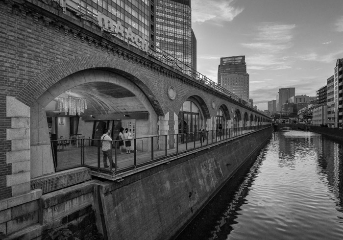
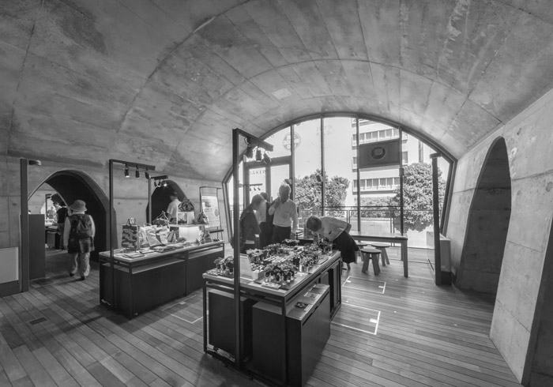
안으로 들어오면 진짜 허투루 만들지 않은 모습들이 곳곳에서 엿보이는데요. 토목 시설을 그대로 사용하는 것이다 보니 기본적으로 간접 조명을 이용해 공간을 연출하는 부분이 특징이며, 그러면서도 칸다강 방면으로는 벽돌을 뜯어냄으로써, 정확히는 안쪽으로 다시 쌓아 올리면서 자연스럽게 테라스 공간을 만듦과 동시에 실내를 어둡지 않게 그리고 선선하게 유지하고 있는 점이 인상적이었습니다.
그 외에도 과거 플랫폼으로 올라가는 두 계단이 완벽히 보존되어 있어서, 올라가면 과거의 선로와 함께 중앙 본선이 지나가는 모습을 굉장히 가까이에서 구경할 수 있는데요. JR은 참 자신들의 핵심 자산인 철도 인프라를 도시 경험의 일부로 보여주는 데 정말 도가 튼 것 같습니다. 철덕들의 나라라서 그런가? 대중들에게 어떻게 가까이 다가가야 하는지를 너무나도 잘 아는 느낌이랄까요? 중앙선 외에도 주변 JR 노선들이 어디로 가는지 여기에서 하나씩 찾아보는 재미가 있으니, 아키하바라 일대의 과거와 현재를 보여주는 여러모로 재미있는 장소라고 생각되네요.
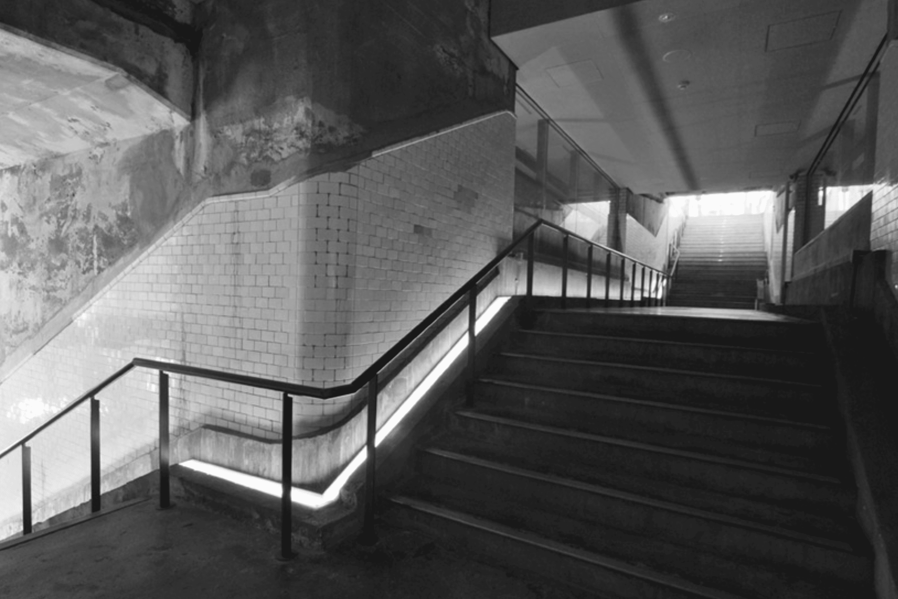
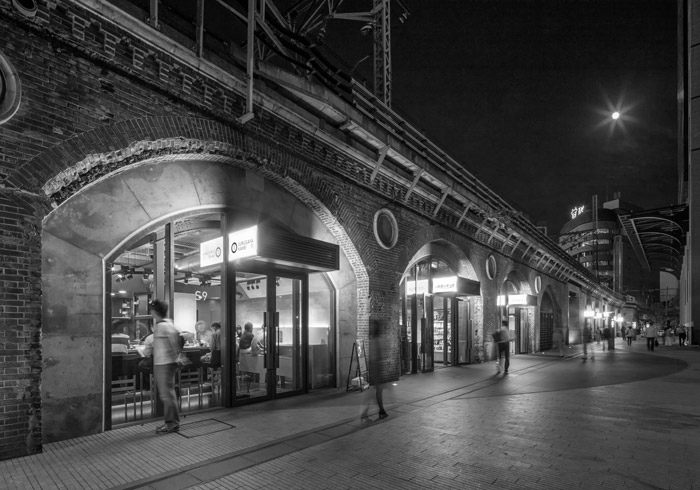
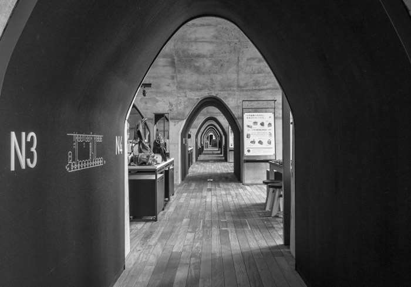
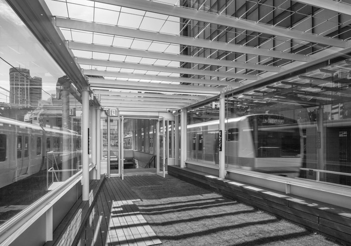
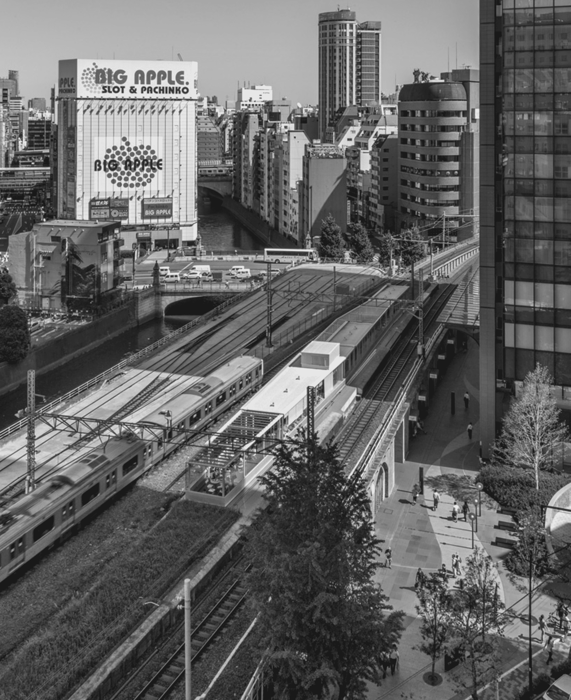
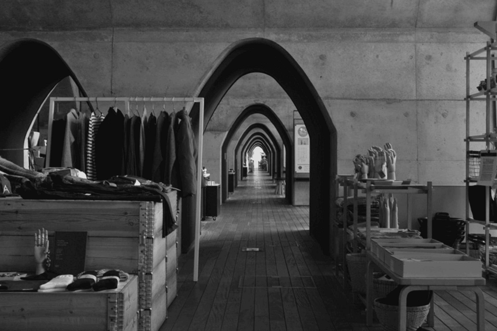
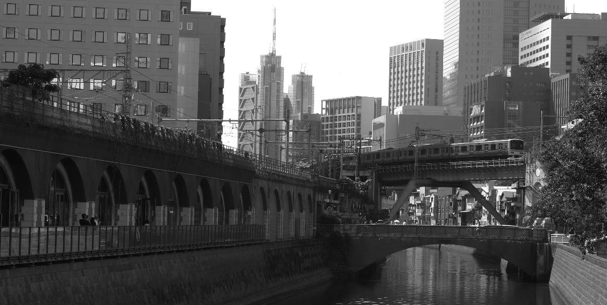
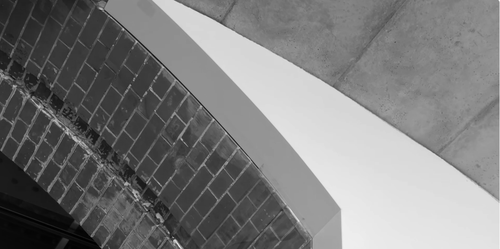
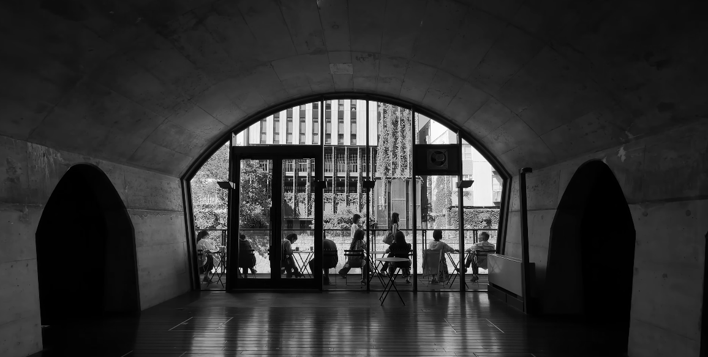
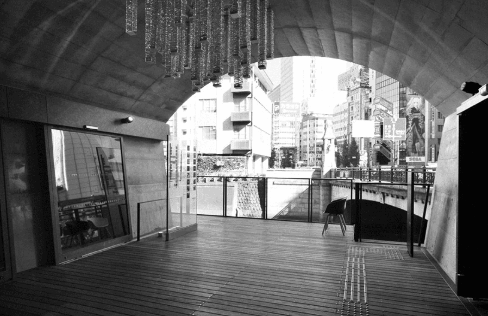
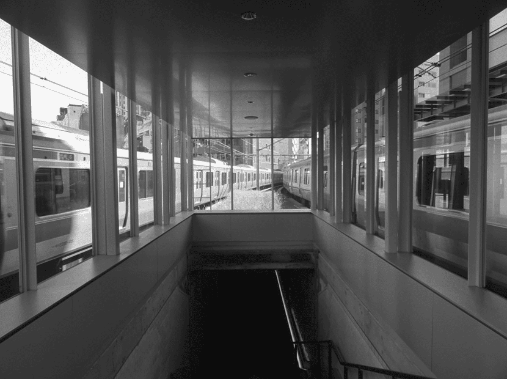
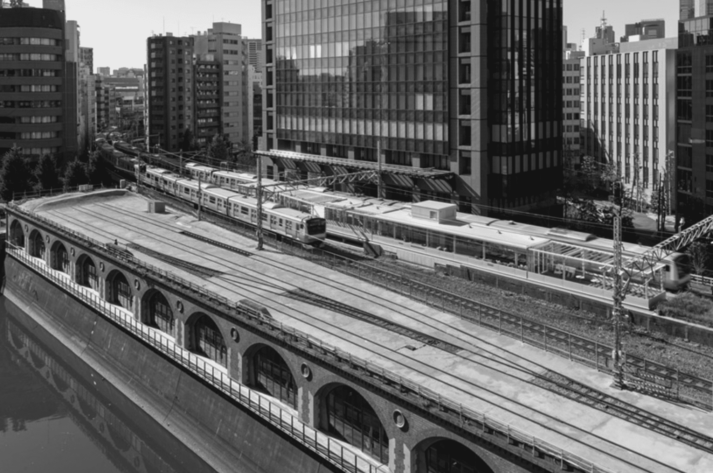
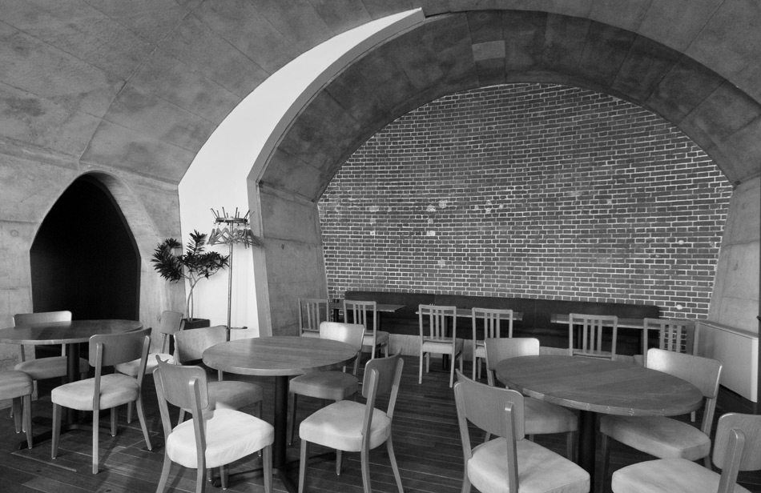
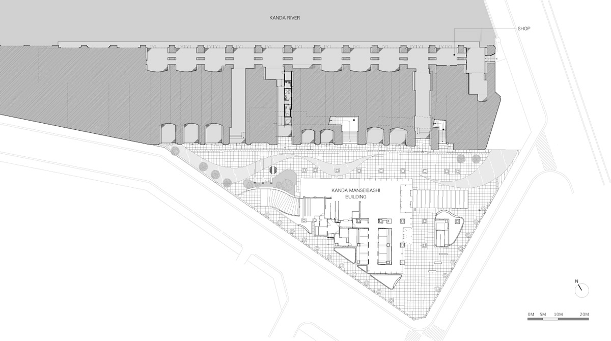
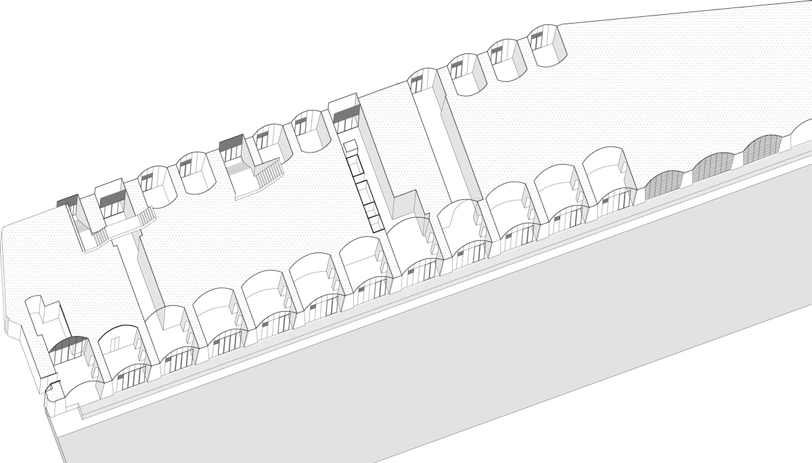